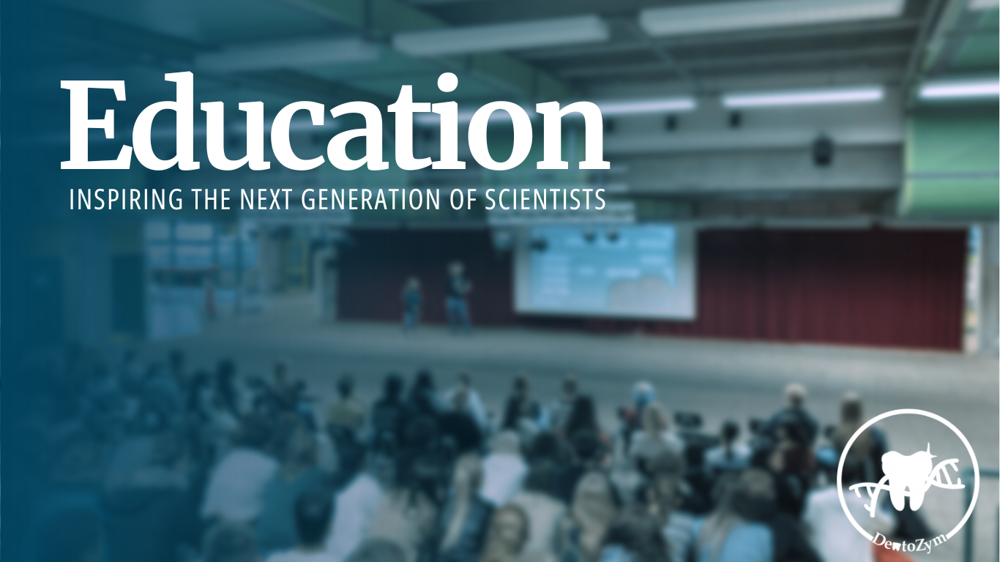
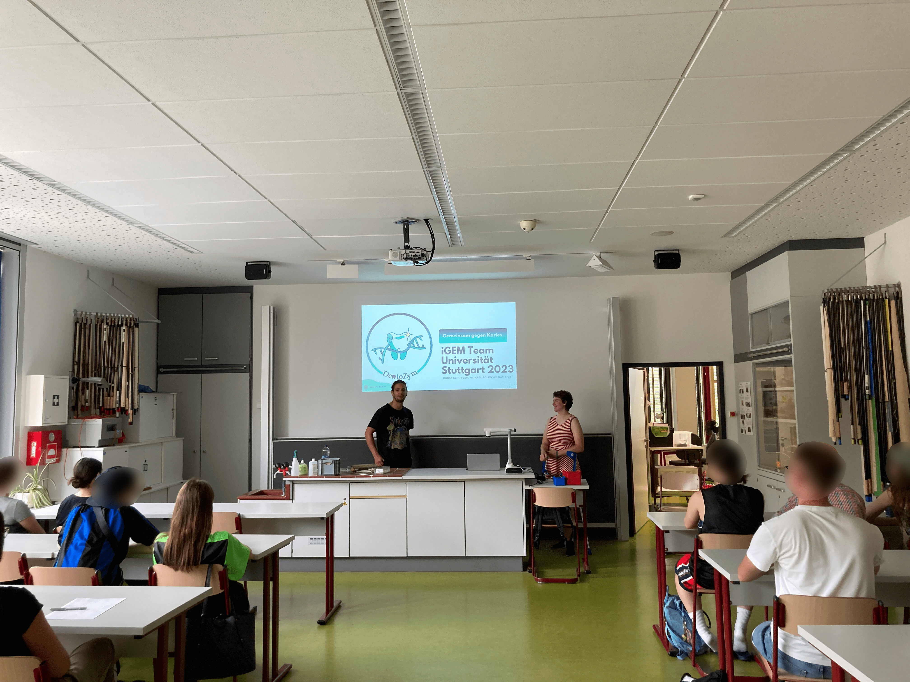
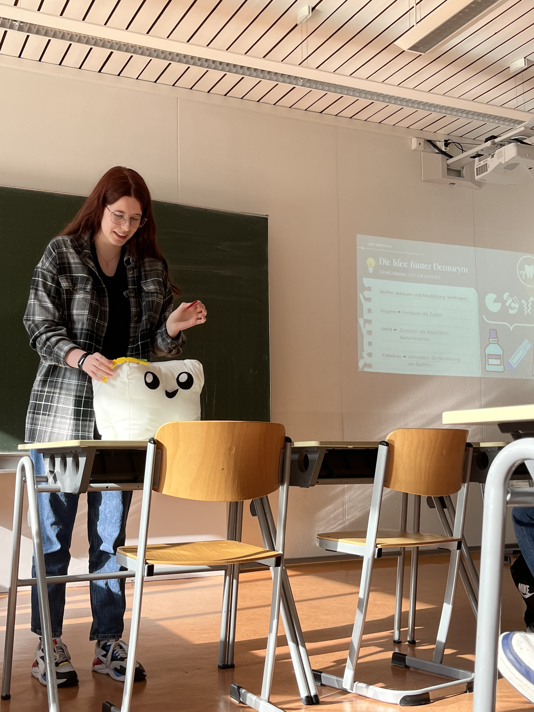
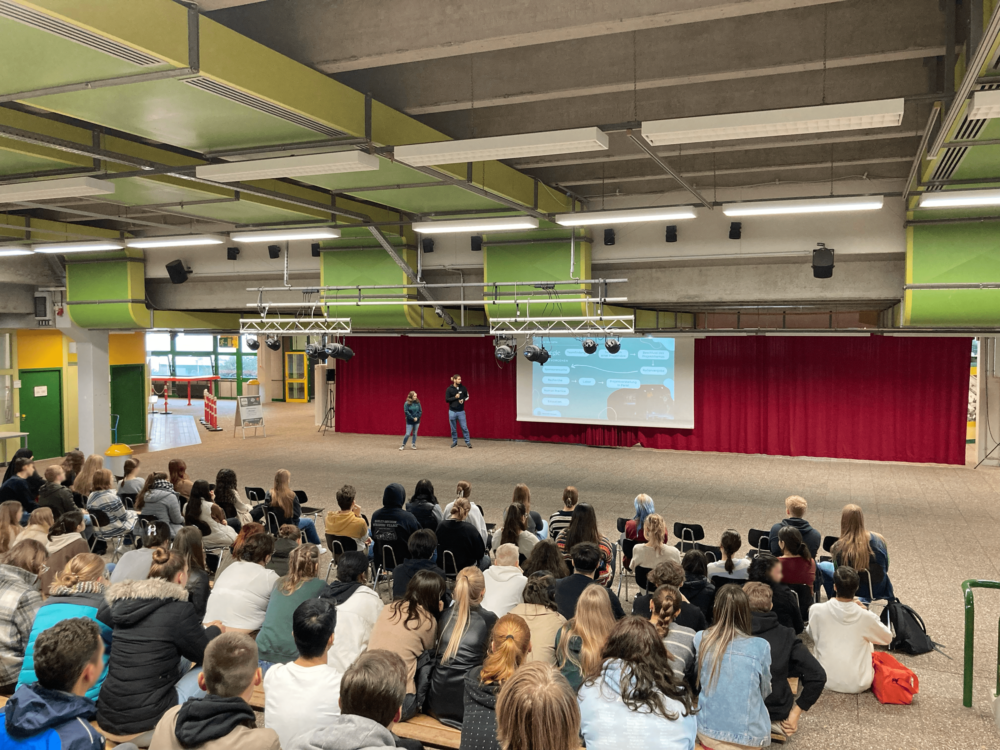
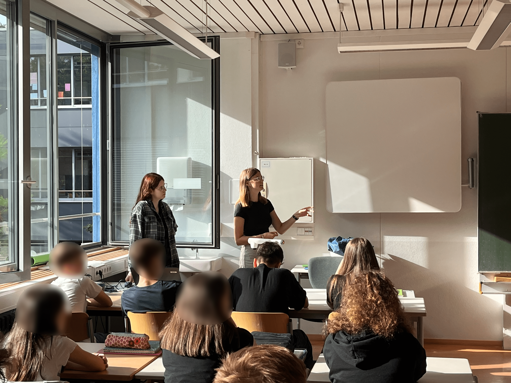
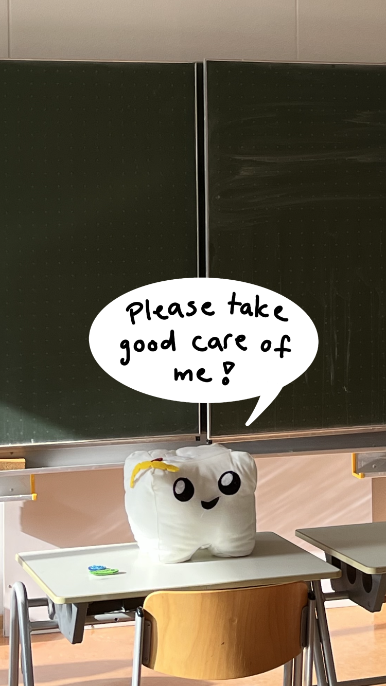
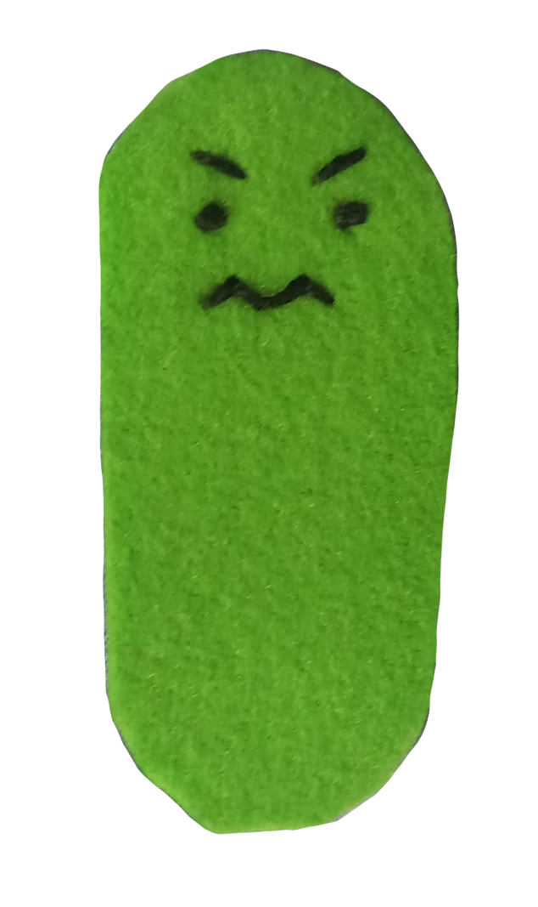
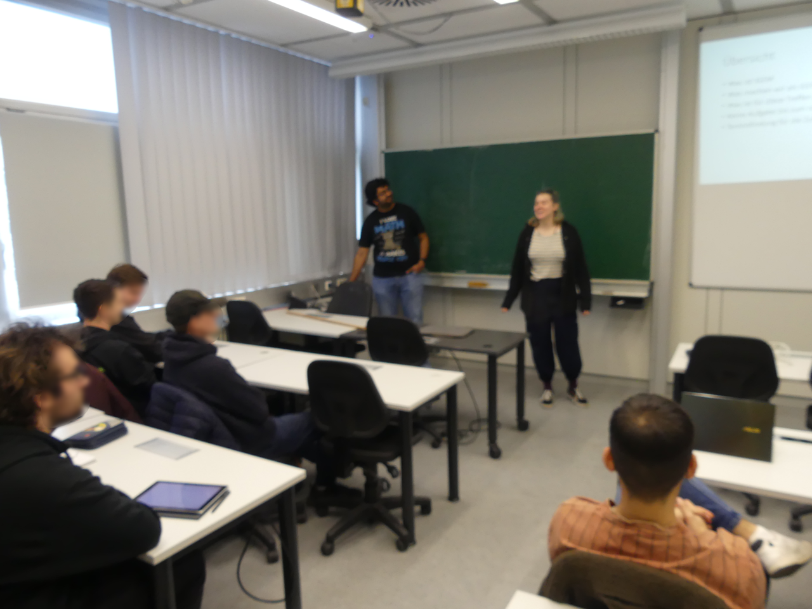
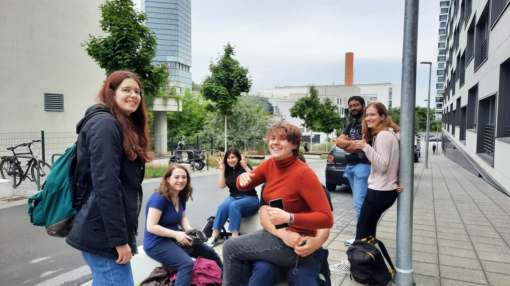
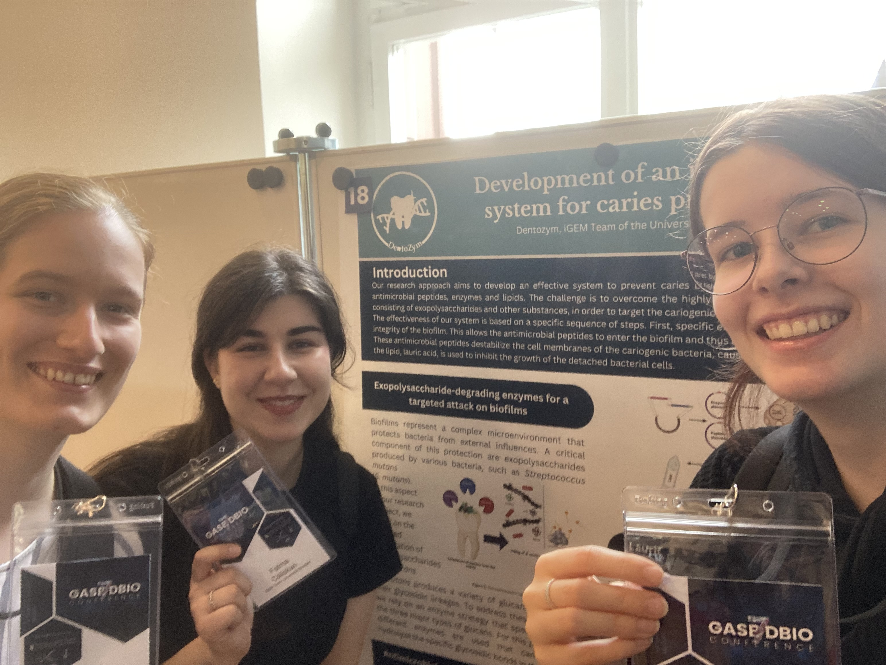

Acquiring knowledge and sharing it are the fundamentals of keeping the field of biology alive and progressing. It is important to not only share your knowledge with fellow colleagues but to make it accessible and understandable for the public and the young generation of aspiring scientists. We took it upon ourselves to contribute to this an educate others in the course of the iGEM-competition.
When graduating school every student is faced with a lot of decisions. Do I study or become an apprentice or take a gap year? What do I want to study? What career path will I choose?
Looking back to our past selves we thought: Why did the members of our team pursuit an academic career in biology? One of those reasons was to pursue research into topics we grew to be interested in school. That’s why we decided to use the iGEM-project as an opportunity to excite soon to graduate students, that are about to pursuit their various paths of life, about synthetic biology. With this idea in mind members of our team got in touch with their old biology teachers.
We created a presentation, which showed our process of building our team and project. The presentation intended to give the students an overview of what a scientific project is all about: the team, the vision as well as an explanation of our topic and the execution. We also used this opportunity to tell the students about our major ‘Technical Biology’ at the University of Stuttgart and the iGEM competition in general.

Having received several invitations from previous biology classes, we set out to visit our first school the Immanuel-Kant Gymnasium in Leinfelden. We were greeted by several interested young biologists of the final class. We managed to inform and hopefully to inspire these students and were left with a lot of gratitude from the teacher of that class. We also visited the Max-Planck-Gymnasium in Nürtingen and talked in front of grade 12 students. It was very impressive to see the interest the students had in us being there. Even though it was voluntary for them to come to our presentation, the classroom was filled to the brim.
Initially we only intended to address students from final classes, but the Humboldt-Gymnasium in Karlsruhe gave us the opportunity to speak to a lower-level class. On average these students in grade 7 were about 12 to 13 years old. We figured that we could maybe even inspire these young children and spark their interest in biology which may lead them to pursuit a career in synthetic biology. Given the age of these children we adjusted our presentation based on their knowledge and brought our mascot ‘Zahni’ to help as well. This allowed us to visualize the basics of our project even though our option of scientific depth was limited. Having visited many different schools, the last one stood out to us in a different way.
The Christiane-Herzog-Schule in Heilbronn is a school specializing in biotechnology. The students at this school have an emphasis on biology as well as being able to perform minor laboratory experiments during school. This was our perfect target audience as these students were graduating next year. With about a hundred students, it was also our largest audience.
Having visited several schools, the interest and enthusiasm of these young people became obvious to us. The students asked various questions, were interested in our project and in the field of synthetic biology. It was also a breath of fresh air for all these students as we, who are currently in the field of research can talk about it from a different perspective than a teacher could. It felt more alive and more engaging which made synthetic biology more tangible for the students.As mentioned, we also promoted our major and the University of Stuttgart to the students, which was not only deeply appreciated by them but also by the teachers. They thought it was great for the students to see and hear from students from a university what studying is actually like and hear about our personal experiences rather than from a professor. Some teachers also expressed the wish that talks like ours become regular events. But due to lack of engagement, funding, and time this unfortunately hasn’t been established yet. We believe that it is in the best interest of not only students but also universities to engage more with young people trough likewise young people. To educate these curious minds and the possibility to have impacted them in a possible way brought joy to us and was very rewarding. Catering to the future generation is inevitable if you want this field of science to flourish in the future and the iGEM-competition allowed us to do a part in that, for which we are very grateful.


On May 10th 2023 “Zahni” came to life, a cute plush tooth named after the German word for tooth, Zahn. He loved to help explaining caries and our project to kids on the day of science, by letting them interactively place and remove bacteria, exopolysaccharide as well as antimicrobial peptides and enzymes on him. During the presentation of our project at the Humboldt-Gymnasium in Karlsruhe, he shined again as he helped to visualize our project when explaining it to young students. Not only was he great at educating others but was also great emotional support during hard times. Now our loving mascot is waiting impatiently for his big trip to ParisDuring our iGEM journey we noticed that we wanted to let a broader audience partake in our experience. The idea was to find a way to aid undergraduate students at our university into developing their own ideas.


The biggest challenge we faced was the management of the iGEM project and finding a way to work efficiently within the team. We struggled to coordinate the team and have everyone on the same page. Luckily, we met the company Turner & Townsend at the “bonding”-fair which took place at our university campus. They are leading provider of project and construction management services. No matter if you have a scientific project, like the iGEM competition, or a construction project, the basic principles of project management are the same. So, we scheduled a workshop with them to learn how we can improve the management of our own project.
On September 19th a few members of our team attended the GASB 7 x Designer Biology Conference in Freiburg im Breisgau and presented a poster about our project. It is the annual GASB conference co-organized with Designer Biology focusing on Synthetic Biology and Biomaterials.

Scientist from all around the world visited and held talks about different topics. The talks were categorized in sessions like “Phototroph Synthetic Biology” or “Protein Design”. It was very inspiring to see what other people are working on and what methods they use. Especially the visionary Lecture on “Teaching E. coli to fix CO2” in memory of Arren Bar-Even held by Prof. Dr. Ron Milo left a huge impression. It was fascinating to see what can be done nowadays and that the vision of one person was able to inspire many scientists and could have an significant impact in the near future.© 2023 - Content on this site is licensed under a Creative Commons Attribution 4.0 International license.
The repository used to create this website is available at gitlab.igem.org/2023/stuttgart.